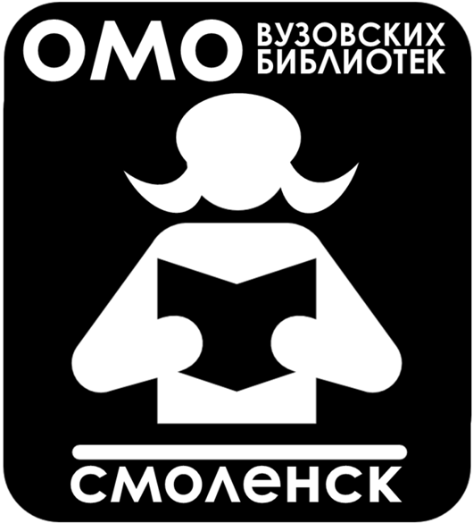

КАЛЕНДАРЬ НОВОСТЕЙ
30 мая 2012 года в библиотеке СмолГУ прошёл семинар
«Стратегическое планирование в библиотеке: общие цели,
задачи, подходы». На семинаре выступила преподаватель
Смоленского государственного института искусств, доцент
кафедры библиотековедения и информационных ресурсов
Максименкова Г.В. Она сравнила понятия перспективного и
стратегического планирования, рассказала о SWOT-анализе и
методике стратегического планирования. Объединившись в
группы по 2 человека, участники семинара составили проекты
стратегического планирования для своей библиотеки,
сформулировали своё видение «миссии библиотеки» высшего
учебного заведения, предложили пути её дальнейшего
развития.
30 марта 2012 года в библиотеке СмолГУ прошло заседание
руководителей библиотек ссузов, на котором были подведены
итоги работы за 2011 год, представлены новые документы по
списанию литературы в библиотеках (Отрадных Т.Н., зав.
отделом комплектования и научной обработки литературы).Для
участников заседания ведущий методист библиотеки СмолГУ
Пухляк Н.В. приготовила беседу «…И прежде, чем быть
Бородинскому бою…», дала методические советы по
организации и проведению мероприятий, посвящённых 200-
летию Отечественной войны 1812 года, провела обзор
литературы по выставке «1812-2012: 200-летие Отечественной
войны».
23 марта состоялось заседание Совета библиотек вузов ОМО,
на котором были обсуждены «Итоги работы библиотек вузов за
2011 год». Библиотеки проводят большую работу по
обеспечению учебно-воспитательного процесса и научной
работы в вузах. В связи с внедрением новейших технологий в
библиотеках повышается качество библиотечно-
библиографических и информационных услуг.
Заседание завершилось чествованием М.Ф. Егоровой, многие
годы руководившей библиотекой СГАФКСиТ – в связи с её
80-летием и уходом на заслуженный отдых.
21 февраля 2012 года в Смоленской областной юношеской
библиотеке состоялся семинар «Традиции и инновации в
обслуживании пользователей библиотек системы начального
и среднего профессионального образования». Ведущий
методист библиотеки СмолГУ Пухляк Н.В. предложила
участникам семинара консультацию «Новые формы общения с
пользователями библиотеки». Рассматривались примеры
наполняемости сайтов библиотек вузов и ссузов ОМО,
обсуждались возможности использования Интернета для
выполнения виртуальных справок, представления виртуальных
выставок и т.п.

|


{kind=link}
{kind=link}
{kind=link}
{kind=link}
{kind=link}
{kind=link}
{kind=link}
{kind=link}